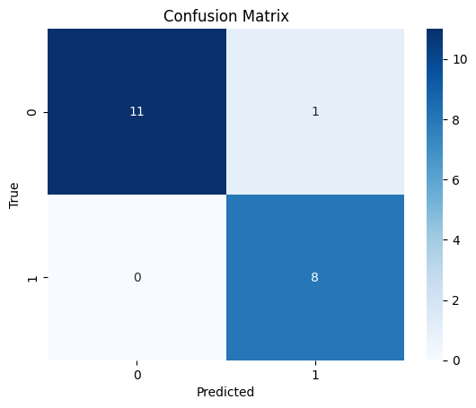

!pip install Sastrawi pandas
Collecting Sastrawi
Downloading Sastrawi-1.0.1-py2.py3-none-any.whl.metadata (909 bytes)
Requirement already satisfied: pandas in /usr/local/lib/python3.10/dist-packages (2.2.2)
Requirement already satisfied: numpy>=1.22.4 in /usr/local/lib/python3.10/dist-packages (from pandas) (1.26.4)
Requirement already satisfied: python-dateutil>=2.8.2 in /usr/local/lib/python3.10/dist-packages (from pandas) (2.8.2)
Requirement already satisfied: pytz>=2020.1 in /usr/local/lib/python3.10/dist-packages (from pandas) (2024.2)
Requirement already satisfied: tzdata>=2022.7 in /usr/local/lib/python3.10/dist-packages (from pandas) (2024.2)
Requirement already satisfied: six>=1.5 in /usr/local/lib/python3.10/dist-packages (from python-dateutil>=2.8.2->pandas) (1.16.0)
Downloading Sastrawi-1.0.1-py2.py3-none-any.whl (209 kB)
━━━━━━━━━━━━━━━━━━━━━━━━━━━━━━━━━━━━━━━━ 209.7/209.7 kB 3.3 MB/s eta 0:00:00
?25hInstalling collected packages: Sastrawi
Successfully installed Sastrawi-1.0.1
import pandas as pd
import re
import pickle
import nltk
import numpy as np
nltk.download('stopwords')
nltk.download('wordnet')
nltk.download('punkt')
from tqdm import tqdm
from nltk.corpus import stopwords
from Sastrawi.Stemmer.StemmerFactory import StemmerFactory
from sklearn.decomposition import TruncatedSVD
from sklearn.feature_extraction.text import CountVectorizer
from sklearn.feature_extraction.text import TfidfVectorizer
from sklearn.metrics.pairwise import cosine_similarity
from sklearn.model_selection import train_test_split
[nltk_data] Downloading package stopwords to /root/nltk_data...
[nltk_data] Unzipping corpora/stopwords.zip.
[nltk_data] Downloading package wordnet to /root/nltk_data...
[nltk_data] Downloading package punkt to /root/nltk_data...
[nltk_data] Unzipping tokenizers/punkt.zip.
file_path = '/content/hasil_crawling.csv'
data = pd.read_csv(file_path)
data
| Title | Date | Content | Category | |
|---|---|---|---|---|
| 0 | PalmCo Dukung Cyber Education di Sekolah Remot... | Ade Hapsari Lestarini • 11 September 2024 08:59 | Jakarta: Sub Holding Perkebunan Nusantara PTPN... | Ekonomi |
| 1 | Harga Jual Emas Antam Melesat Rp13 Ribu/Gram | Arif Wicaksono • 11 September 2024 08:55 | Jakarta: Harga emas batangan PT Aneka Tambang ... | Ekonomi |
| 2 | Terpopuler Ekonomi: Pascamerger Angkasa Pura h... | Ade Hapsari Lestarini • 11 September 2024 08:28 | Jakarta: Berita-berita terpopuler ekonomi pada... | Ekonomi |
| 3 | Inflasi dan Debat Presiden AS Bikin Harga Emas... | Ade Hapsari Lestarini • 11 September 2024 08:12 | Jakarta: Harga emas dunia menguat pada sesi pe... | Ekonomi |
| 4 | Harga Minyak Mentah Brent Terpental ke USD69,1... | Ade Hapsari Lestarini • 11 September 2024 07:57 | New York: Harga minyak mentah dunia terpantau ... | Ekonomi |
| ... | ... | ... | ... | ... |
| 95 | Indonesia Ditunjuk jadi Tuan Rumah World Abili... | Gregorius Gelino • 6 September 2024 12:07 | Paris: Menteri Pemuda dan Olahraga Republik In... | Olahraga |
| 96 | Menpora Berharap Banyak dengan PON XXI Aceh-Sumut | Gregorius Gelino • 6 September 2024 11:19 | Jakarta: Menteri Pemuda dan Olahraga Republik ... | Olahraga |
| 97 | IFG Labuan Bajo Marathon 2024 Siapkan Hadiah R... | Gregorius Gelino • 6 September 2024 10:25 | Labuan Bajo: Pendaftaran IFG Labuan Bajo Marat... | Olahraga |
| 98 | Hasil Pertandingan UEFA Nations League | Alfa Mandalika • 6 September 2024 09:22 | Jakarta: Sejumlah negara melakoni laga UEFA Na... | Olahraga |
| 99 | Ketum Perbasi Danny Kosasih Tutup Usia | Kautsar Halim • 6 September 2024 04:24 | Jakarta: Dunia bola basket Tanah Air tengah be... | Olahraga |
100 rows × 4 columns
df_acak = data.sample(frac=1).reset_index(drop=True)
df_acak
| Title | Date | Content | Category | |
|---|---|---|---|---|
| 0 | IFG Labuan Bajo Marathon 2024 Siapkan Hadiah R... | Gregorius Gelino • 6 September 2024 10:25 | Labuan Bajo: Pendaftaran IFG Labuan Bajo Marat... | Olahraga |
| 1 | YCAB Foundation-Juara Capital Indonesia Luncur... | 10 September 2024 16:40 | Jakarta: YCAB Foundation bersama Juara Capital... | Ekonomi |
| 2 | Gladi Resik Lancar, Menpora Yakin Upacara Pemb... | Gregorius Gelino • 9 September 2024 10:23 | Banda Aceh: Untuk memastikan pembukaan PON XXI... | Olahraga |
| 3 | Erick Thohir Pastikan Rumput GBK Aman Jelang H... | 7 September 2024 19:27 | Jakarta: Ketua Umum PSSI Erick Thohir memeriks... | Olahraga |
| 4 | Dito Yakin Pembukaan PON XXI Aceh-Sumut akan M... | Gregorius Gelino • 7 September 2024 12:24 | Jakarta: Menteri Pemuda dan Olahraga Republik ... | Olahraga |
| ... | ... | ... | ... | ... |
| 95 | Indonesia Harus Lanjutkan Momentum Lawan Austr... | Gregorius Gelino • 9 September 2024 13:38 | Jakarta: Timnas Indonesia akan menghadapi Aust... | Olahraga |
| 96 | Literasi Digital Perlu Dikenalkan pada Anak Se... | Husen Miftahudin • 10 September 2024 20:21 | Jombang: Etika digital harus diperkenalkan kep... | Ekonomi |
| 97 | Mentan Copot Direktur Gegara 'Main' dengan Cal... | Naufal Zuhdi • 10 September 2024 18:01 | Ekonomi | |
| 98 | Bintang Newcastle Masih Kecewa dengan Southgate | Gregorius Gelino • 7 September 2024 11:10 | Newcastle: Penyerang Newcastle United, Anthony... | Olahraga |
| 99 | BI: Kinerja Penjualan Eceran Agustus 2024 Dipe... | Annisa Ayu Artanti • 10 September 2024 11:10 | Ekonomi |
100 rows × 4 columns
# Pastikan nama kolom sesuai dengan kolom yang berisi judul dan isi berita
titles = data['Title'] # Gantilah 'judul_berita' dengan nama kolom judul yang sesuai
contents = data['Content'] # Gantilah 'isi_berita' dengan nama kolom isi yang sesuai
# Gabungkan judul dan isi menjadi satu teks untuk setiap dokumen
data['Content'] = titles + " " + contents
# 2. Split data sebelum preprocessing
X = data['Content'] # Menggunakan kolom 'Content' gabungan sebagai fitur
y = data['Category'] # Kolom target (label)
# Melakukan split data menjadi 80% training dan 20% testing
X_train, X_test, y_train, y_test = train_test_split(X, y, test_size=0.2, random_state=42)
# 2. Preprocessing
def clean_lower(text):
if isinstance(text, str):
return text.lower()
return text
def clean_punct(text):
if isinstance(text, str):
clean_patterns = re.compile(r'[0-9]|[/(){}\[\]\|@,;_]|[^a-z ]')
text = clean_patterns.sub(' ', text)
text = re.sub(r'\s+', ' ', text).strip()
return text
return text
def _normalize_whitespace(text):
if isinstance(text, str):
corrected = re.sub(r'\s+', ' ', text)
return corrected.strip()
return text
def clean_stopwords(text):
if isinstance(text, str):
stopword = set(stopwords.words('indonesian'))
text = ' '.join(word for word in text.split() if word not in stopword)
return text.strip()
return text
def sastrawistemmer(text):
factory = StemmerFactory()
st = factory.create_stemmer()
text = ' '.join(st.stem(word) for word in text.split())
return text
#Terapkan preprocessing pada data training dan testing secara terpisah
X_train = X_train.apply(clean_lower)
X_train = X_train.apply(clean_punct)
X_train = X_train.apply(_normalize_whitespace)
X_train = X_train.apply(clean_stopwords)
X_train = X_train.apply(sastrawistemmer)
X_test = X_test.apply(clean_lower)
X_test = X_test.apply(clean_punct)
X_test = X_test.apply(_normalize_whitespace)
X_test = X_test.apply(clean_stopwords)
X_test = X_test.apply(sastrawistemmer)
train_df = pd.DataFrame({'stemmed': X_train, 'Category': y_train})
test_df = pd.DataFrame({'stemmed': X_test, 'Category': y_test})
train_df
| stemmed | Category | |
|---|---|---|
| 55 | tim panjat tebing putri jatim sabet emas nomor... | Olahraga |
| 88 | intip penalti gagal maarten paes baru lawan ar... | Olahraga |
| 26 | ekonomi as soft landing chicago ekonomi amerik... | Ekonomi |
| 42 | semen hijau ancam ubah iklim dunia jakarta pt ... | Ekonomi |
| 69 | pon xxi aceh sumut muncul bakat panjat tebing ... | Olahraga |
| ... | ... | ... |
| 60 | kolaborasi lancar bikin menpora pon xxi aceh s... | Olahraga |
| 71 | hummels kes sosok de rossi roma bek as roma ma... | Olahraga |
| 14 | tan copot direktur gegara main calo barang jasa | Ekonomi |
| 92 | abraham wenas labuh kesatria bengawan solo sol... | Olahraga |
| 51 | venue arung jeram pon xxi aceh sumut potensi d... | Olahraga |
80 rows × 2 columns
test_df
| stemmed | Category | |
|---|---|---|
| 83 | warga aceh antusias saksi tanding basket pon x... | Olahraga |
| 53 | shin tae yong hadir sesi latih timnas indonesi... | Olahraga |
| 70 | menko pmk pasti presiden hadir buk pon xxi ace... | Olahraga |
| 45 | harga emas antam hasil tipis jakarta harga ema... | Ekonomi |
| 44 | erick thohir rombak direksi bulog wahyu supary... | Ekonomi |
| 39 | dagang emas bursa komoditi pilih masyarakat ja... | Ekonomi |
| 22 | bahlil timbang lanjut operasi pltu | Ekonomi |
| 80 | timnas indonesia sponsor jakarta extrajoss min... | Olahraga |
| 10 | anggota holding pupuk indonesia dorong ekosist... | Ekonomi |
| 0 | palmco dukung cyber education sekolah remote a... | Ekonomi |
| 18 | bisnis vila janji smart luxury villa at damara... | Ekonomi |
| 30 | milik sumber daya ebt indonesia yakin main uta... | Ekonomi |
| 73 | deschamps kesal main prancis lengah lawan ital... | Olahraga |
| 33 | klaster usaha telur asin abinisa omzet tingkat... | Ekonomi |
| 90 | sosok ten hag bikin de ligt gabung mu manchest... | Olahraga |
| 4 | harga minyak mentah brent pental usd barel new... | Ekonomi |
| 76 | erick thohir pasti rumput gbk aman jelang hada... | Olahraga |
| 77 | hotel apung penuh akomodasi masyarakat pon xxi... | Olahraga |
| 12 | skk migas bp catat rekor produksi gas nasional | Ekonomi |
| 31 | anugerah svarna bhumi award tani tantang maju ... | Ekonomi |
# Menggunakan TfidfVectorizer untuk menghitung TF-IDF
tfidf_vectorizer = TfidfVectorizer()
# Melakukan fit dan transform pada data training
X_train_tfidf = tfidf_vectorizer.fit_transform(X_train)
# Melakukan transform pada data testing (hanya transform, tidak fit)
X_test_tfidf = tfidf_vectorizer.transform(X_test)
# X_train_tfidf dan X_test_tfidf sekarang berisi representasi TF-IDF dari data training dan testing
# Menampilkan data TF-IDF dalam bentuk DataFrame
tfidf_df = pd.DataFrame(X_train_tfidf.toarray(), columns=tfidf_vectorizer.get_feature_names_out())
# Menampilkan beberapa baris pertama dari DataFrame
tfidf_df
| abadi | abbeele | abdullah | abilitysport | abilitysprot | abraham | absen | acara | aceh | ada | ... | york | yose | youth | yunani | yusrizal | za | zeki | zian | zona | zuri | |
|---|---|---|---|---|---|---|---|---|---|---|---|---|---|---|---|---|---|---|---|---|---|
| 0 | 0.0 | 0.0 | 0.0 | 0.0 | 0.0 | 0.000000 | 0.0 | 0.00000 | 0.176186 | 0.000000 | ... | 0.0 | 0.0 | 0.0 | 0.0 | 0.000000 | 0.000000 | 0.0 | 0.0 | 0.000000 | 0.0 |
| 1 | 0.0 | 0.0 | 0.0 | 0.0 | 0.0 | 0.000000 | 0.0 | 0.00000 | 0.000000 | 0.000000 | ... | 0.0 | 0.0 | 0.0 | 0.0 | 0.000000 | 0.000000 | 0.0 | 0.0 | 0.059791 | 0.0 |
| 2 | 0.0 | 0.0 | 0.0 | 0.0 | 0.0 | 0.000000 | 0.0 | 0.00000 | 0.000000 | 0.000000 | ... | 0.0 | 0.0 | 0.0 | 0.0 | 0.000000 | 0.000000 | 0.0 | 0.0 | 0.000000 | 0.0 |
| 3 | 0.0 | 0.0 | 0.0 | 0.0 | 0.0 | 0.000000 | 0.0 | 0.00000 | 0.000000 | 0.000000 | ... | 0.0 | 0.0 | 0.0 | 0.0 | 0.000000 | 0.000000 | 0.0 | 0.0 | 0.000000 | 0.0 |
| 4 | 0.0 | 0.0 | 0.0 | 0.0 | 0.0 | 0.000000 | 0.0 | 0.00000 | 0.388843 | 0.045726 | ... | 0.0 | 0.0 | 0.0 | 0.0 | 0.000000 | 0.053634 | 0.0 | 0.0 | 0.000000 | 0.0 |
| ... | ... | ... | ... | ... | ... | ... | ... | ... | ... | ... | ... | ... | ... | ... | ... | ... | ... | ... | ... | ... | ... |
| 75 | 0.0 | 0.0 | 0.0 | 0.0 | 0.0 | 0.000000 | 0.0 | 0.05601 | 0.293105 | 0.000000 | ... | 0.0 | 0.0 | 0.0 | 0.0 | 0.000000 | 0.000000 | 0.0 | 0.0 | 0.000000 | 0.0 |
| 76 | 0.0 | 0.0 | 0.0 | 0.0 | 0.0 | 0.000000 | 0.0 | 0.00000 | 0.000000 | 0.000000 | ... | 0.0 | 0.0 | 0.0 | 0.0 | 0.000000 | 0.000000 | 0.0 | 0.0 | 0.000000 | 0.0 |
| 77 | 0.0 | 0.0 | 0.0 | 0.0 | 0.0 | 0.000000 | 0.0 | 0.00000 | 0.000000 | 0.000000 | ... | 0.0 | 0.0 | 0.0 | 0.0 | 0.000000 | 0.000000 | 0.0 | 0.0 | 0.000000 | 0.0 |
| 78 | 0.0 | 0.0 | 0.0 | 0.0 | 0.0 | 0.528422 | 0.0 | 0.00000 | 0.000000 | 0.000000 | ... | 0.0 | 0.0 | 0.0 | 0.0 | 0.000000 | 0.000000 | 0.0 | 0.0 | 0.000000 | 0.0 |
| 79 | 0.0 | 0.0 | 0.0 | 0.0 | 0.0 | 0.000000 | 0.0 | 0.00000 | 0.228088 | 0.000000 | ... | 0.0 | 0.0 | 0.0 | 0.0 | 0.058427 | 0.000000 | 0.0 | 0.0 | 0.000000 | 0.0 |
80 rows × 2249 columns
# Menampilkan data TF-IDF dalam bentuk DataFrame
tfidf_df = pd.DataFrame(X_test_tfidf.toarray(), columns=tfidf_vectorizer.get_feature_names_out())
# Menampilkan beberapa baris pertama dari DataFrame
tfidf_df
| abadi | abbeele | abdullah | abilitysport | abilitysprot | abraham | absen | acara | aceh | ada | ... | york | yose | youth | yunani | yusrizal | za | zeki | zian | zona | zuri | |
|---|---|---|---|---|---|---|---|---|---|---|---|---|---|---|---|---|---|---|---|---|---|
| 0 | 0.0 | 0.0 | 0.0 | 0.0 | 0.0 | 0.0 | 0.0 | 0.000000 | 0.376001 | 0.000000 | ... | 0.000000 | 0.0 | 0.0 | 0.0 | 0.0 | 0.000000 | 0.0 | 0.0 | 0.000000 | 0.0 |
| 1 | 0.0 | 0.0 | 0.0 | 0.0 | 0.0 | 0.0 | 0.0 | 0.000000 | 0.000000 | 0.000000 | ... | 0.000000 | 0.0 | 0.0 | 0.0 | 0.0 | 0.000000 | 0.0 | 0.0 | 0.000000 | 0.0 |
| 2 | 0.0 | 0.0 | 0.0 | 0.0 | 0.0 | 0.0 | 0.0 | 0.142301 | 0.372335 | 0.000000 | ... | 0.000000 | 0.0 | 0.0 | 0.0 | 0.0 | 0.000000 | 0.0 | 0.0 | 0.000000 | 0.0 |
| 3 | 0.0 | 0.0 | 0.0 | 0.0 | 0.0 | 0.0 | 0.0 | 0.000000 | 0.000000 | 0.000000 | ... | 0.000000 | 0.0 | 0.0 | 0.0 | 0.0 | 0.000000 | 0.0 | 0.0 | 0.000000 | 0.0 |
| 4 | 0.0 | 0.0 | 0.0 | 0.0 | 0.0 | 0.0 | 0.0 | 0.000000 | 0.000000 | 0.000000 | ... | 0.000000 | 0.0 | 0.0 | 0.0 | 0.0 | 0.000000 | 0.0 | 0.0 | 0.000000 | 0.0 |
| 5 | 0.0 | 0.0 | 0.0 | 0.0 | 0.0 | 0.0 | 0.0 | 0.000000 | 0.000000 | 0.000000 | ... | 0.000000 | 0.0 | 0.0 | 0.0 | 0.0 | 0.000000 | 0.0 | 0.0 | 0.000000 | 0.0 |
| 6 | 0.0 | 0.0 | 0.0 | 0.0 | 0.0 | 0.0 | 0.0 | 0.000000 | 0.000000 | 0.000000 | ... | 0.000000 | 0.0 | 0.0 | 0.0 | 0.0 | 0.000000 | 0.0 | 0.0 | 0.000000 | 0.0 |
| 7 | 0.0 | 0.0 | 0.0 | 0.0 | 0.0 | 0.0 | 0.0 | 0.000000 | 0.000000 | 0.029647 | ... | 0.000000 | 0.0 | 0.0 | 0.0 | 0.0 | 0.000000 | 0.0 | 0.0 | 0.026648 | 0.0 |
| 8 | 0.0 | 0.0 | 0.0 | 0.0 | 0.0 | 0.0 | 0.0 | 0.000000 | 0.000000 | 0.000000 | ... | 0.000000 | 0.0 | 0.0 | 0.0 | 0.0 | 0.000000 | 0.0 | 0.0 | 0.000000 | 0.0 |
| 9 | 0.0 | 0.0 | 0.0 | 0.0 | 0.0 | 0.0 | 0.0 | 0.000000 | 0.000000 | 0.000000 | ... | 0.000000 | 0.0 | 0.0 | 0.0 | 0.0 | 0.000000 | 0.0 | 0.0 | 0.000000 | 0.0 |
| 10 | 0.0 | 0.0 | 0.0 | 0.0 | 0.0 | 0.0 | 0.0 | 0.000000 | 0.000000 | 0.000000 | ... | 0.000000 | 0.0 | 0.0 | 0.0 | 0.0 | 0.000000 | 0.0 | 0.0 | 0.000000 | 0.0 |
| 11 | 0.0 | 0.0 | 0.0 | 0.0 | 0.0 | 0.0 | 0.0 | 0.058084 | 0.000000 | 0.000000 | ... | 0.000000 | 0.0 | 0.0 | 0.0 | 0.0 | 0.000000 | 0.0 | 0.0 | 0.000000 | 0.0 |
| 12 | 0.0 | 0.0 | 0.0 | 0.0 | 0.0 | 0.0 | 0.0 | 0.000000 | 0.000000 | 0.000000 | ... | 0.000000 | 0.0 | 0.0 | 0.0 | 0.0 | 0.000000 | 0.0 | 0.0 | 0.000000 | 0.0 |
| 13 | 0.0 | 0.0 | 0.0 | 0.0 | 0.0 | 0.0 | 0.0 | 0.000000 | 0.000000 | 0.000000 | ... | 0.000000 | 0.0 | 0.0 | 0.0 | 0.0 | 0.000000 | 0.0 | 0.0 | 0.000000 | 0.0 |
| 14 | 0.0 | 0.0 | 0.0 | 0.0 | 0.0 | 0.0 | 0.0 | 0.000000 | 0.000000 | 0.092021 | ... | 0.000000 | 0.0 | 0.0 | 0.0 | 0.0 | 0.000000 | 0.0 | 0.0 | 0.000000 | 0.0 |
| 15 | 0.0 | 0.0 | 0.0 | 0.0 | 0.0 | 0.0 | 0.0 | 0.000000 | 0.000000 | 0.000000 | ... | 0.178839 | 0.0 | 0.0 | 0.0 | 0.0 | 0.000000 | 0.0 | 0.0 | 0.000000 | 0.0 |
| 16 | 0.0 | 0.0 | 0.0 | 0.0 | 0.0 | 0.0 | 0.0 | 0.000000 | 0.000000 | 0.000000 | ... | 0.000000 | 0.0 | 0.0 | 0.0 | 0.0 | 0.000000 | 0.0 | 0.0 | 0.000000 | 0.0 |
| 17 | 0.0 | 0.0 | 0.0 | 0.0 | 0.0 | 0.0 | 0.0 | 0.000000 | 0.276478 | 0.000000 | ... | 0.000000 | 0.0 | 0.0 | 0.0 | 0.0 | 0.070822 | 0.0 | 0.0 | 0.000000 | 0.0 |
| 18 | 0.0 | 0.0 | 0.0 | 0.0 | 0.0 | 0.0 | 0.0 | 0.000000 | 0.000000 | 0.000000 | ... | 0.000000 | 0.0 | 0.0 | 0.0 | 0.0 | 0.000000 | 0.0 | 0.0 | 0.000000 | 0.0 |
| 19 | 0.0 | 0.0 | 0.0 | 0.0 | 0.0 | 0.0 | 0.0 | 0.088154 | 0.000000 | 0.000000 | ... | 0.000000 | 0.0 | 0.0 | 0.0 | 0.0 | 0.000000 | 0.0 | 0.0 | 0.000000 | 0.0 |
20 rows × 2249 columns
# 3. Menerapkan SVD untuk LSA pada data training
n_components = 100 # Sesuaikan jumlah komponen sesuai kebutuhan
svd = TruncatedSVD(n_components=n_components, random_state=42)
X_train_lsa = svd.fit_transform(X_train_tfidf)
# Terapkan SVD pada data testing dengan transform
X_test_lsa = svd.transform(X_test_tfidf)
# 4. Membuat DataFrame untuk hasil LSA dengan kolom kategori untuk data training dan testing
train_lsa_df = pd.DataFrame(X_train_lsa)
train_lsa_df.insert(0, 'Category', y_train.values)
test_lsa_df = pd.DataFrame(X_test_lsa)
test_lsa_df.insert(0, 'Category', y_test.values)
# Tampilkan hasil DataFrame
train_lsa_df
| Category | 0 | 1 | 2 | 3 | 4 | 5 | 6 | 7 | 8 | ... | 70 | 71 | 72 | 73 | 74 | 75 | 76 | 77 | 78 | 79 | |
|---|---|---|---|---|---|---|---|---|---|---|---|---|---|---|---|---|---|---|---|---|---|
| 0 | Olahraga | 0.400701 | -0.077862 | -0.029316 | 0.056578 | -0.246171 | -0.315028 | 0.243916 | -0.216382 | 0.032368 | ... | 0.314498 | 0.162217 | -0.008865 | 0.282084 | -0.083307 | 0.037410 | 0.011908 | -0.005251 | 0.032270 | 0.004303 |
| 1 | Olahraga | 0.143576 | 0.204212 | 0.053732 | 0.262264 | -0.121692 | 0.133844 | -0.175461 | 0.233478 | -0.038338 | ... | 0.004277 | -0.017828 | 0.017721 | 0.012339 | 0.023690 | -0.025048 | -0.038147 | 0.028209 | 0.004789 | -0.000320 |
| 2 | Ekonomi | 0.036433 | 0.050378 | 0.212365 | -0.121516 | -0.008085 | 0.167583 | 0.286661 | -0.013197 | -0.163677 | ... | 0.003188 | -0.033219 | 0.038091 | 0.002156 | -0.013466 | 0.008152 | 0.001823 | 0.018685 | -0.012604 | 0.001692 |
| 3 | Ekonomi | 0.068005 | 0.036736 | 0.106974 | 0.017157 | -0.022385 | 0.022795 | -0.020434 | -0.020895 | 0.110428 | ... | 0.014115 | -0.008674 | 0.003002 | 0.007669 | 0.004492 | -0.008182 | 0.003028 | 0.008768 | -0.003385 | -0.000572 |
| 4 | Olahraga | 0.535662 | -0.210607 | -0.056649 | -0.013659 | -0.127089 | -0.157167 | 0.127480 | -0.116897 | 0.113533 | ... | -0.202626 | -0.121578 | 0.103721 | -0.317657 | -0.034731 | -0.037606 | -0.008685 | 0.027538 | -0.043134 | -0.000802 |
| ... | ... | ... | ... | ... | ... | ... | ... | ... | ... | ... | ... | ... | ... | ... | ... | ... | ... | ... | ... | ... | ... |
| 75 | Olahraga | 0.666514 | -0.290415 | -0.076043 | -0.120363 | 0.150540 | 0.087186 | -0.103461 | 0.008114 | -0.102870 | ... | 0.189855 | 0.029769 | 0.123406 | -0.131130 | 0.442216 | 0.055137 | 0.057162 | 0.155392 | -0.038788 | 0.014016 |
| 76 | Olahraga | 0.206346 | 0.679424 | -0.327798 | -0.408274 | 0.052050 | -0.010719 | 0.009843 | -0.026033 | -0.005908 | ... | -0.023877 | 0.024518 | 0.047003 | 0.009740 | 0.049232 | 0.121401 | 0.042456 | -0.168350 | -0.186251 | -0.283179 |
| 77 | Ekonomi | 0.044953 | 0.104034 | 0.027083 | 0.017124 | -0.155233 | 0.360334 | 0.206052 | 0.047404 | 0.029768 | ... | 0.084397 | -0.294924 | 0.064590 | 0.080526 | -0.002689 | 0.007298 | -0.000243 | -0.010239 | -0.009288 | 0.002974 |
| 78 | Olahraga | 0.089262 | 0.158256 | -0.008684 | 0.062669 | -0.068544 | -0.019256 | -0.019838 | 0.029706 | -0.059873 | ... | 0.004399 | 0.003715 | 0.004922 | 0.007878 | 0.009039 | 0.009373 | -0.002740 | -0.019008 | -0.004816 | -0.000416 |
| 79 | Olahraga | 0.416591 | -0.168308 | -0.033203 | -0.075919 | 0.034829 | 0.103100 | -0.161353 | -0.048473 | -0.073767 | ... | -0.007530 | 0.009002 | -0.049419 | 0.072864 | 0.068717 | 0.076533 | -0.035326 | 0.037640 | 0.030497 | -0.001773 |
80 rows × 81 columns
test_lsa_df
| Category | 0 | 1 | 2 | 3 | 4 | 5 | 6 | 7 | 8 | ... | 70 | 71 | 72 | 73 | 74 | 75 | 76 | 77 | 78 | 79 | |
|---|---|---|---|---|---|---|---|---|---|---|---|---|---|---|---|---|---|---|---|---|---|
| 0 | Olahraga | 0.458319 | -0.046831 | -0.086646 | 0.042527 | -0.043357 | -0.012485 | 0.057931 | 0.124124 | 0.047791 | ... | 0.007255 | -0.012221 | 0.003481 | 0.033913 | 0.035716 | -0.051952 | 0.017069 | -0.002889 | 0.020195 | 0.039439 |
| 1 | Olahraga | 0.147774 | 0.163584 | 0.023957 | 0.094274 | -0.107667 | 0.063279 | -0.108041 | 0.069972 | -0.031313 | ... | 0.009563 | 0.012879 | 0.000955 | 0.003921 | -0.004984 | -0.006614 | -0.029989 | -0.026645 | 0.001442 | 0.031651 |
| 2 | Olahraga | 0.552359 | -0.190969 | -0.008656 | -0.071269 | 0.098737 | 0.006252 | -0.005459 | 0.096787 | 0.034978 | ... | -0.009065 | -0.001037 | 0.038148 | -0.010702 | 0.080459 | 0.017709 | -0.017645 | 0.016708 | 0.006216 | -0.007157 |
| 3 | Ekonomi | 0.048460 | 0.039188 | 0.178269 | -0.023679 | -0.059967 | -0.062542 | -0.028703 | -0.086220 | 0.045012 | ... | -0.029117 | 0.012036 | 0.063602 | 0.017634 | 0.026368 | -0.006399 | -0.015140 | 0.004491 | 0.000679 | -0.004617 |
| 4 | Ekonomi | 0.011219 | 0.016711 | 0.025960 | 0.026636 | -0.047012 | 0.046695 | -0.094791 | 0.064809 | -0.005692 | ... | -0.056126 | -0.009637 | 0.060759 | 0.006954 | -0.000988 | 0.027328 | -0.019756 | 0.070291 | 0.005638 | -0.009561 |
| 5 | Ekonomi | 0.095505 | 0.057407 | 0.171263 | -0.058295 | -0.072903 | -0.050218 | -0.017829 | -0.073759 | 0.104473 | ... | 0.033228 | 0.019076 | -0.031866 | 0.013989 | -0.013338 | 0.031936 | -0.000266 | 0.032732 | -0.005850 | -0.001672 |
| 6 | Ekonomi | 0.009901 | 0.005962 | 0.007904 | 0.006576 | -0.005765 | 0.005818 | -0.004326 | 0.008850 | 0.013501 | ... | 0.019262 | 0.000360 | -0.005921 | -0.002341 | 0.000136 | -0.008761 | 0.002880 | -0.005788 | -0.005747 | -0.002967 |
| 7 | Olahraga | 0.195774 | 0.131995 | 0.107273 | 0.122304 | -0.157305 | 0.088707 | -0.183550 | 0.028349 | 0.041987 | ... | -0.034431 | -0.001534 | 0.033389 | -0.051170 | 0.006040 | 0.000363 | -0.052037 | -0.006210 | 0.009990 | 0.066113 |
| 8 | Ekonomi | 0.084157 | 0.058806 | 0.110575 | 0.037577 | -0.066863 | 0.072803 | -0.064135 | -0.052636 | 0.068111 | ... | -0.047761 | -0.001281 | 0.016869 | -0.003947 | 0.016986 | 0.009631 | -0.053204 | -0.018471 | 0.012662 | 0.024795 |
| 9 | Ekonomi | 0.034589 | 0.021148 | 0.045539 | -0.006176 | -0.021982 | 0.007735 | -0.030103 | -0.029021 | 0.067885 | ... | -0.013499 | -0.003373 | -0.017769 | 0.012516 | -0.002515 | -0.004120 | -0.000664 | -0.002378 | -0.011159 | 0.019724 |
| 10 | Ekonomi | 0.052555 | 0.037976 | 0.076980 | -0.006429 | -0.013447 | 0.001996 | 0.009961 | -0.022439 | 0.026957 | ... | -0.015237 | -0.008453 | -0.024890 | 0.007148 | 0.026011 | 0.006886 | 0.002967 | -0.032378 | 0.009486 | -0.016061 |
| 11 | Ekonomi | 0.086476 | 0.047924 | 0.101672 | -0.008101 | -0.059530 | 0.055613 | -0.070262 | -0.037079 | 0.106970 | ... | 0.021307 | -0.018428 | -0.031207 | -0.033627 | 0.003266 | 0.046697 | -0.029509 | -0.048287 | -0.002310 | 0.018489 |
| 12 | Olahraga | 0.133181 | 0.200878 | 0.016616 | 0.149181 | 0.043985 | 0.042622 | -0.009288 | 0.028567 | 0.040652 | ... | 0.022048 | -0.012294 | -0.015243 | -0.038991 | -0.026866 | 0.002147 | 0.057665 | 0.052329 | 0.075603 | -0.023830 |
| 13 | Ekonomi | 0.095054 | 0.056759 | 0.111534 | 0.003805 | -0.073061 | 0.017525 | -0.069231 | -0.080232 | 0.204247 | ... | -0.001285 | 0.015959 | -0.038623 | 0.002756 | -0.011253 | 0.026911 | -0.009955 | -0.037003 | 0.008516 | 0.034992 |
| 14 | Olahraga | 0.078407 | 0.173810 | -0.053017 | -0.061658 | -0.008831 | -0.013443 | -0.002027 | -0.049148 | 0.006723 | ... | -0.010688 | 0.013735 | -0.015322 | 0.014150 | 0.016945 | 0.004457 | 0.003966 | -0.052616 | -0.008409 | -0.055870 |
| 15 | Ekonomi | 0.050524 | 0.069738 | 0.269394 | -0.087177 | 0.008140 | -0.056573 | 0.011543 | -0.000759 | 0.025074 | ... | 0.018576 | -0.020212 | -0.079948 | -0.035284 | -0.029010 | 0.011002 | 0.014962 | 0.012064 | -0.012811 | -0.002787 |
| 16 | Olahraga | 0.093984 | 0.095269 | 0.071754 | 0.089555 | -0.114509 | 0.105434 | -0.196222 | 0.150706 | -0.024589 | ... | -0.025131 | -0.001690 | 0.012743 | 0.020640 | 0.003879 | -0.012511 | -0.033299 | 0.100293 | -0.003106 | -0.000382 |
| 17 | Olahraga | 0.398380 | -0.142512 | -0.013829 | -0.065559 | 0.009735 | 0.029918 | 0.027362 | 0.019840 | 0.110582 | ... | -0.124640 | -0.023398 | -0.011556 | 0.034948 | -0.002276 | -0.000389 | 0.022532 | 0.040964 | -0.015110 | -0.000716 |
| 18 | Ekonomi | 0.039327 | 0.006245 | 0.027786 | -0.000843 | -0.036396 | -0.000174 | -0.011992 | -0.043373 | 0.055214 | ... | -0.001206 | -0.001276 | -0.000910 | 0.009954 | -0.012223 | -0.008532 | 0.009878 | 0.025213 | -0.003284 | -0.005740 |
| 19 | Ekonomi | 0.119092 | 0.053245 | 0.162376 | -0.045642 | -0.070896 | 0.025211 | -0.082321 | -0.086386 | 0.069273 | ... | -0.019433 | -0.014224 | -0.003151 | 0.013077 | 0.010103 | 0.037244 | -0.010167 | -0.050524 | -0.001331 | -0.038114 |
20 rows × 81 columns
from sklearn import preprocessing
from sklearn.linear_model import LogisticRegression
from sklearn.metrics import classification_report, confusion_matrix
import seaborn as sns
import matplotlib.pyplot as plt
# 1. Encode labels
label_encoder = preprocessing.LabelEncoder()
y_train_encoded = label_encoder.fit_transform(y_train)
y_test_encoded = label_encoder.transform(y_test)
# 2. Model Training - Logistic Regression
lr_model = LogisticRegression()
lr_model.fit(X_train_lsa, y_train_encoded)
# 3. Prediction on test set
y_pred = lr_model.predict(X_test_lsa)
# 4. Melihat nilai actual dan predicted
a = pd.DataFrame({'Actual value': y_test_encoded, 'Predicted value': y_pred})
a
| Actual value | Predicted value | |
|---|---|---|
| 0 | 1 | 1 |
| 1 | 1 | 1 |
| 2 | 1 | 1 |
| 3 | 0 | 0 |
| 4 | 0 | 1 |
| 5 | 0 | 0 |
| 6 | 0 | 0 |
| 7 | 1 | 1 |
| 8 | 0 | 0 |
| 9 | 0 | 0 |
| 10 | 0 | 0 |
| 11 | 0 | 0 |
| 12 | 1 | 1 |
| 13 | 0 | 0 |
| 14 | 1 | 1 |
| 15 | 0 | 0 |
| 16 | 1 | 1 |
| 17 | 1 | 1 |
| 18 | 0 | 0 |
| 19 | 0 | 0 |
# 5. Confusion Matrix dan Classification Report
matrix = confusion_matrix(y_test_encoded, y_pred)
sns.heatmap(matrix, annot=True, fmt="d", cmap="Blues")
plt.title('Confusion Matrix')
plt.xlabel('Predicted')
plt.ylabel('True')
plt.show()
# 6. Classification Report
print(classification_report(y_test_encoded, y_pred))

precision recall f1-score support
0 1.00 0.92 0.96 12
1 0.89 1.00 0.94 8
accuracy 0.95 20
macro avg 0.94 0.96 0.95 20
weighted avg 0.96 0.95 0.95 20
import pickle
# 1. Menyimpan TF-IDF Vectorizer
with open('tfidf_vectorizer.sav', 'wb') as f:
pickle.dump(tfidf_vectorizer, f)
# 2. Menyimpan SVD Model (TruncatedSVD)
with open('svd_model.sav', 'wb') as f:
pickle.dump(svd, f)
# 3. Menyimpan Logistic Regression Model
with open('lr_model.sav', 'wb') as f:
pickle.dump(lr_model, f)